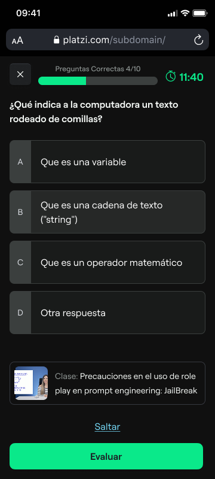
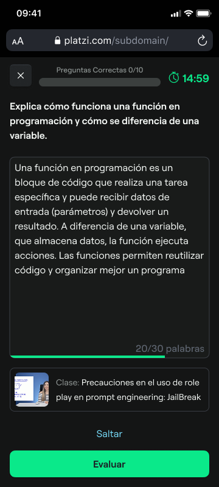
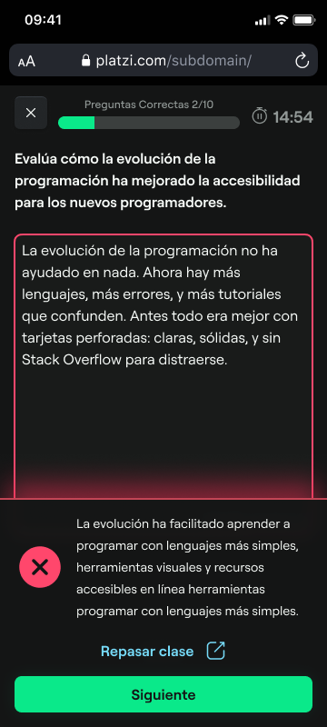
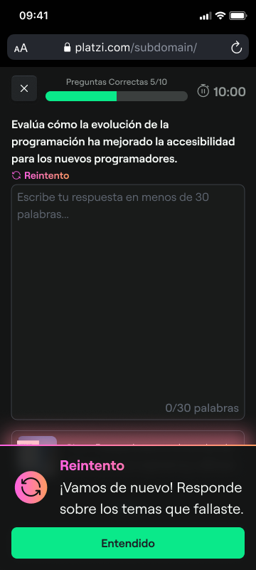

AI assessment system
Auto-generates question banks and evaluates open responses in real time, with gamification that increased post-exam engagement by 20%.
Impact
Engagement and retention gains
The new assessment system reduced abandonment and kept students learning after the exam.
+20%Classes viewed after completing an exam
−5%Exam abandonment rate
01 — Problem
Manual, slow and limited
The existing evaluation system depended entirely on manual work and only supported closed-ended questions.
ATime-intensive creationBuilding quality question banks took extensive manual effort and delayed course launches.
BLimited question typesMultiple choice only, no way to evaluate deeper understanding.
CPoor engagementStatic exams led to high abandonment and low motivation to finish.
02 — Solution
AI-powered creation and grading
A system that generates comprehensive question banks and evaluates both closed and open-ended answers, wrapped in a gamified experience.
1
Question bank generation
When a course is created, the system analyzes lesson content and generates a question bank, tagged by lesson and type (multiple choice, open-ended, fill-in-the-blank) and ready to serve.

2
Random question selection
Each exam draws one question per lesson at random, keeping a minimum share of open-ended questions to assess deeper comprehension.

3
Real-time open-ended grading
AI compares each answer with the expected response and lesson context. It assesses conceptual understanding and accuracy.

4
Gamified experience
Instant feedback with animations and answer streaks. Students who fail retry only the questions they missed within the allowed time, instead of retaking the whole exam.

03 — Key learnings
What I learned building this
01
Gamification drives completion
Streaks, animations and retries turned exams from intimidating barriers into engaging experiences. Small UX details had outsized impact.
02
AI enables deeper assessment
Open-ended evaluation was impossible at scale before. AI grading unlocked richer assessment without manual review of every response.
03
Instant feedback matters
Real-time grading and immediate certificate sharing created positive reinforcement loops.